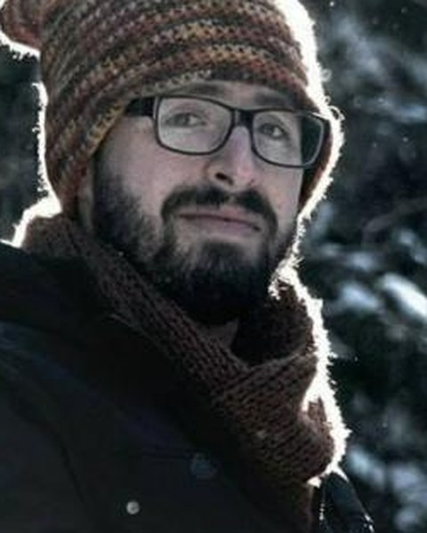
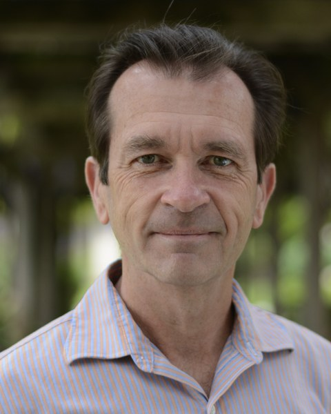

Voices
In their words.
Reflections from clients, colleagues, and clinicians who have worked with our founder, Dr. Gerdenio “Sonny” Manuel — on the care, the accompaniment, and the depth of the work he has practiced for forty years.
Voices
Reflections from clients, colleagues, and clinicians who have worked with our founder, Dr. Gerdenio “Sonny” Manuel — on the care, the accompaniment, and the depth of the work he has practiced for forty years.
In confidence
When my husband was dying, Sonny offered steady, sturdy accompaniment. Working with him, we found words to speak the unspeakable — those inchoate feelings of loss, regret, even anger, which once spoken suddenly weighed less. Walking with him, we found the courage to enter fully the experience of dying, and to find in the midst of it great light, even hope. Though it ended in death, this was a journey of great healing. Sonny offers counseling grounded in reality and practiced with compassionate wisdom.
Working with Sonny has yielded in me perhaps the most significant and lasting personal growth of any therapeutic relationship I have engaged in. His approach is one of compassion and understanding, all while being ultimately aimed at enhancing personal reflection and growth. He has especially contributed to my own growth as a gay man who has at times struggled to find self-compassion and self-understanding.
To date, the year I spent in supervision with Sonny was the best I have received, both personally and professionally. Sonny took the time to truly see and understand me as a human being. The connection and trust cultivated in our relationship made it possible for me to work through my own areas of personal growth. The way Sonny engaged with me while I struggled with experiences of loss, hopelessness, and limited affective range made me a more genuine person and a more alive human being.

On the record
Psychologists who know Dr. Manuel and his work firsthand — through supervision, shared practice, and referral.

Beau Scott, PsyDI had the honor of both co-leading a psychotherapy group with Fr. Manuel and being supervised by him. In all my years of training, never did I grow more as a psychotherapist than I did from my time with him — not to mention the evolution of my own psychological processes just from being in his presence. Fr. Manuel has an amazing ability to quickly get to the root of the problem. He isn’t the kind of therapist to merely work on temporarily removing symptoms but rather, he follows the symptom to the core and affords his client space for a corrective experience, so that the root simply no longer produces the symptom. Fr. Manuel’s therapeutic personality, coupled with his elite training, is the recipe for the kind of therapist who is unmatched.

Thomas G. Plante, Ph.D., ABPP Professor, Santa Clara University · Editor, Spirituality in Clinical PracticeDr. Manuel is a therapist’s therapist. He is clearly the person I would send my dearest friends and closest relatives to if they needed psychotherapy — and I’ve been in practice myself for over thirty years. He perfectly blends excellent clinical skills based in psychology, spirituality, and his rich personal experience to offer clients the very best psychotherapy experience they can hope to ever receive.
We welcome your questions about psychotherapy, our practice, and whether our work might be a good fit. Reaching out is a first step, not a commitment.
Contact the Center